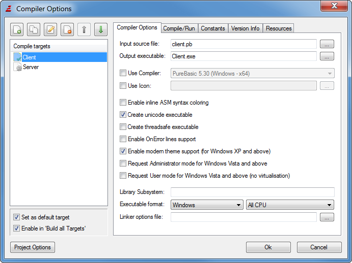

Compiling your programs
Compiling is simple. Just select "Compile/Run" (F5 by default) and your program will be
compiled and executed for a testing run.
To customize the compiling process, you can open the "Compiler options" dialog. The
settings made there are associated with the current source file or the current project,
and also remembered when they are closed. The place where this information is saved can be configured.
By default, it is saved at the end of the source code as a comment (invisible in the IDE).
In case of an error that prevents the compiler from completing the compilation, it aborts
and displays an error-message. This message is also logged in the error log, and the line
that caused the error is marked.
A number of functions from older versions of PureBasic that have been removed from the package
still exist for a while as a compatibility wrapper to allow older codes to be tested/ported more
easily. If such a function is used in the code, the compiler will issue a warning.
A window will be opened displaying all warnings issued during compilation. Double-clicking
on a warning will display the file/line that caused the warning.
Note that such compatibility wrappers will not remain indefinitely but will be removed in a future update,
so it is recommended to fix issues that cause a compiler warning instead of relying on such deprecated functions.
The compiler menu

Compile/Run
This compiles the current source code with the compiler options set for it and
executes it. The executable file is stored in a temporary location, but it will be executed with
the current path set to the directory of the source code; so loading a file from the same directory
as the source code will work.
The source code need not be saved for this (but any included files must be saved).
The "Compile/Run" option respects the debugger setting (on or off) from the compiler
options or debugger menu (they are the same).
Run
This executes the last compiled source code once again. Whether or not the debugger is enabled
depends on the setting of the last compilation.
Compile with Debugger
This is the same as "Compile/Run" except that it ignores the debugger setting and enabled the
debugger for this compilation. This is useful when you usually have the debugger off, but want
to have it on for just this one compilation.
Compile without Debugger
Same as "Compile with Debugger" except that it forces the debugger to be off for this compilation.
Restart Compiler (not present on all OS)
This causes the compiler to restart. It also causes the compiler to reload all the libraries and
resident files, and with that, the list of known PureBasic functions, Structures, Interfaces and
Constants is updated too.
This function is useful when you have added a new User Library to the PB directory, but
do not want to restart the whole IDE. It is especially useful for library developers to test their library.
Compiler Options
This opens the compiler options dialog, that lets you set the options for the compilation
of this source file.
Create executable
This opens a save dialog, asking for the executable name to create. If the executable format is set
to DLL, it will create a DLL on Windows, shared object on Linux and dylib on OS X. When creating
an executable on OS X, appending '.app' at the executable name will create a bundled executable
with the necessary directory structure, including the icon. If no '.app' is set, then it will
create a regular console-like executable.
Set default Target
When a project is open, this submenu shows all compile targets and allows to quickly
switch the current default target. The default target is the one which is compiled/executed
with the "Compile/Run" menu entry.
Build Target
When a project is open, this submenu shows all compile targets and allows to directly compile
one of them.
Build all Targets
When a project is open, this menu entry compiles all targets that have this option enabled in the
compiler options. A window is opened to show the build progress.
Compiler options for non-project files
Main source file
By enabling this option, you can define another file that will be the one sent to
the compiler instead of this one. The use of this is that when you are editing a
file that does not run by itself, but is included into another
file, you can tell the compiler to use that other file to start the compilation.
Note: When using this option, you MUST save your source before compiling, as
only files that are written to disk will be used in this case.
Most of the compiler settings will be taken from the main source file, so when setting
this, they are disabled. Only some settings like the debugger setting will be used
from the current source.
Use Compiler
This option allows the selection of a different compiler to use instead of the compiler of the current PureBasic version.
This makes it easy to compile different versions of the same program (x86 and x64 or PowerPC) without having to start up
the IDE for the other compiler just for the compilation.
Additional compilers for this option have to be configured in the preferences.
If the compiler version matches that of the default compiler but the target processor is different then the built-in
debugger of the IDE can still be used to debug the compiled executable.
This means that an executable compiled with the x86 compiler can be debugged using the x64 IDE and vice versa on
Windows and Linux. The same applies to the x86 and PowerPC compilers for Mac OSX.
This is especially useful as this way the fast x86 IDE and debugger can be used on a Mac with an Intel processor
while still compiling programs for the PowerPC processor through the slower emulation.
If the version does not match then the standalone debugger that comes with the selected compiler will
be used for debugging to avoid version conflicts.
Use Icon (Windows and MacOS X only)
Here you can set an icon that will be displayed when viewing the created executable in
the explorer. It is also displayed in the title bar of your programs windows and the Taskbar.
Windows: The icon must be in ICO format (Windows Icon).
MacOS X: The icon must be in ICNS format (Macintosh Icon). To create such an icon, you should create
PNG files in the dimensions 128x128, 48x48, 32x32 and 16x16 of your image and then use the tool "Icon Composer"
that comes with the OSX developer tools to create the ICNS file.
It should be located in /Developer/Applications/Utilities/. To be displayed once the application
has just been created, the Finder may need to be restarted.
Enable inline ASM support
This enables the inline ASM parser. See the Inline x86 ASM section of the help-file
for more information on this option.
Create unicode executable
This tells the compiler to create a unicode executable. The string management, as well as all PB functions will
work with unicode strings. To write unicode text in the sourcefiles, it is recommended to
set the text encoding of the sourcefile to UTF8 (see below), as then unicode text can be directly entered in the IDE
without problem.
To debug unicode programs, it is best to select the Standalone Debugger from the
Preferences, as the debugger that is integrated into the IDE can currently not
display unicode strings (it converts them to ascii before displaying them). The standalone Debugger however can
handle this.
Create thread-safe executable
This tells the compiler to use a special version of certain commands to make them safe to be used in threads.
See the Thread library for more information.
This also enables the Debugger to display correct information if threads are used.
Without this option, the debugger might output wrong line numbers when threads are involved for example.
Enable modern theme support (Windows only)
Adds support for skinned windows on Windows XP, Windows Vista, Windows 7 or Windows 8.
Request Administrator mode for Windows Vista and above (Windows only)
The created executable will always be started with administrator rights on Windows Vista and above
(it will not launch if the administrator password is not entered). This option should be set
for programs that need to access restricted folders or restricted areas of the registry to get
full access.
If this option is turned on, the standalone debugger will automatically
selected when debugging, so the program can be tested in administrator mode.
Note: This option has no effect when the program is run on other versions of Windows.
Request User mode for Windows Vista and above (Windows only)
This option disables the "Virtualization" feature for this executable on Windows Vista and above. Virtualization
caused file and registry access to be redirected to a special user folder if the user does not have
the needed rights to do the operation (this is done for compatibility with older programs).
Note that this redirection is done without notifying the user; this can lead to some confusion if he tries to find
saved files on the file-system. Because of this, it is recommended to disable this feature
if the program complies with the Windows Vista file/registry access rules.
Note: This option has no effect when the program is run on other versions of Windows.
It cannot be combined with the "Administrator mode" option above.
Enable OnError lines support (Windows only)
Includes line numbers information with the executable for the OnError-Library.
Library Subsystem
Here you can select different subsystems for compilation. More than one subsystem can be specified, separated with space
character. For more information, see subsystems.
Executable format
This allows you to specify the created executable format:
Windows : a normal windows executable.
Console : an executable with a default console. This one still can create windows and such,
but it always has a console open. When executed from a command prompt, this executable type uses the
command terminal as its console and writes there, whereas the "Windows" executable would create a
separate Console window when using OpenConsole().
This setting must be used to create a Console application that can have
its input/output redirected with pipes.
Shared DLL : create a windows DLL. See Building a DLL for more info.
Note: When you do "Compile/Run" with a DLL source code, it is executed as a normal executable. A dll
is only created when you use "create executable".
Cpu Optimisation (next to Executable format)
This setting allows to include Cpu optimised PB functions in your executable:
All CPU : The generic functions are included that run on all CPUs.
Dynamic CPU : The generic functions as well as any available CPU specific function
are included. The function to execute is decided at runtime. This creates a bigger executable, but
it will run as fast as possible on all CPUs.
All other options : Include only the functions for a specific CPU. The executable will
not run on any Cpu that does not support this feature.
Note: No PB functions actually support this feature for now (it is ignored for them).
However, some User Libraries include such optimisations.
Linker options file
A textfile can be specified here with further command-line options that should be passed to the linker
when creating the executable. The file should contain one option per line.
Compile/Run
This section contains options that affect how the executable is run from the IDE for testing.
Except for the tools option, they have no effect when the "Create executable" menu is used.
Enable Debugger
This sets the debugger state (on/off) for this source code, or if the main file option
is used, for that file too. This can also be set from the debugger menu.
Enable Purifier
This enables purifier support for the debugger. The purifier can detect a certain type of
programming errors such as writing past the end of an allocated memory buffer.
See Included debugging tools for more details.
Use selected Debugger
This allows to choose a different debugger type for this file only.
If this option is disabled, the default debugger is used; this can be specified in the
preferences.
Use Warning mode
This allows to choose a different warning mode for this file only.
If this option is disabled, the default setting is used which can be specified in the
preferences. The available options are:
Ignore Warnings: Warnings will be ignored without displaying anything.
Display Warnings: Warnings will be displayed in the error log and the source
code line will be marked, but the program continues to run.
Treat Warnings as Errors: A warning will be treated like an error.
Executable command-line
The string given here will be passed as the command-line to the program when running it from the IDE.
Current directory
The directory specified here will be set as the current directory for the program when running it from the IDE.
Create temporary executable in the source directory
With this option turned on, the temporary executable file for running the program from the IDE will be
placed inside the source directory. This can be useful if the program depends on files inside the source
directory for testing. With this option turned off, the executable is created in the systems temporary directory.
Execute tools
Here external tools can be enabled on a per-source basis.
The "Global settings" column shows if the tool is enabled or disabled in the
tools configuration. A tool will only be executed for the source
if it is both enabled globally and for this source.
Note: For a tool to be listed here, it must have the "Enable Tool on a per-source basis" option
checked in the tools configuration and be executed by a trigger
that is associated with a source file (i.e. not executed by menu or by editor startup for example).
Constants
In this section, a set of special editor constants as well as custom constants can be defined
which will be predefined when compiling this source.
#PB_Editor_CompileCount
If enabled, this constant holds the number of times that the code was compiled (both with "Compile/Run" and
"Create Executable") from the IDE. The counter can be manually edited in the input field.
#PB_Editor_BuildCount
If enabled, this constant holds the number of times that the code was compiled with "Create Executable" only.
The counter can be manually edited in the input field.
#PB_Editor_CreateExecutable
If enabled, this constants holds a value of 1 if the code is compiled with the "Create Executable" menu or
0 if "Compile/Run" was used.
Custom constants
Here, custom constants can be defined and then easily switched on/off through checkboxes.
Constant definitions should be added as they would be written within the source code.
This provides a way to enable/disable certain features in a program by defining a constant here and then
checking in the source for it to enable/disable the features with
CompilerIf/CompilerEndIf.
Inside the definition of these constants, environment variables can be used by specifying them
in a "bash" like style with a "$" in front. The environment variable will be replaced in the constant
definition before compiling the source. This allows to pass certain options of the system that the
code is compiled on to the program in the form of constants.
Example: #Creator="$USERNAME"
Here, the $USERNAME will be replaced by the username of the logged in user on Windows systems. If
an environment variable does not exist, it will be replaced by an empty string.
Note: To test within the source code if a constant is defined or not, the Defined()
compiler function can be used.
Version Information

By enabling this, a resource is included in the executable with information about your program.
It can be viewed by right-clicking on the executable in the windows explorer and selecting "Properties".
Also it can be read by other programs such as setup tools.
Fields marked with a * are required if you want to include the version info (if not all required fields
are set, the information may not display correctly on some versions of Windows).
The first two fields MUST be composed of 4 numbers separated by commas. All other fields may be any
string. In the 3 empty boxes, you can define your own fields to include in the Version info block.
In all the string fields, you may include special tokens that are replaced when compiling:
%OS : replaced with the version of Windows used to compile the program
%SOURCE : replaced with the filename (no path) of the source file.
%EXECUTABLE : replaced with the name of the created executable (this only works when "create executable" is used, not with "Compile/Run".
%COMPILECOUNT : replaced with the value for the #PB_Editor_CompileCount constant.
%BUILDCOUNT : replaced with the value for the #PB_Editor_BuildCount constant.
Furthermore, you can use any token listed with the FormatDate() command. These tokens
will be replaced with their respective meaning in FormatDate() used with the date of the
compilation (i.e. %yy gives the year of the compilation)
Meaning of the lower 3 fields:
File OS
Specifies the OS that this Program is compiled for (Using VOS_DOS or VOS_WINDOWS16 makes little sense.
They are only included for the sake of completeness).
File Type
Type of the executable (Here VFT_UNKNOWN, VFT_APP or VFT_DLL are the only ones that really make sense for PureBasic programs).
Language
Specifies the language in which this version info is written.
Resources
Here you can include as many Resource scripts (*.rc files) as you want. They will be compiled
and included with the executable. You can use any resource editor (for example the PellesC IDE)
to create such scripts.
Note: Since Resources are a specific to the Windows platform only, PB does not include a
Library to manage them and they are not further documented here. See documentation on the
Windows API and resources for more information.
Compiler options for projects

The compiler options for projects allow the definition of multiple compile targets. Each target is
basically a set of compiler options with a designated source file and output executable. The left
side of the compiler options window is extended with the list of the defined compile targets. The toolbar
on top of it allows to create, delete, copy, edit or move targets in the list.
The default target is the one which will be compiled when the "Compile/Run" menu entry is selected.
It can be quickly switched with the "Set as default target" checkbox or from the compiler menu.
The "Enable in 'Build all Targets'" option specifies whether or not the selected target will be built
when the 'Build all Targets' menu entry is used.
The right side of the compiler options is almost the same as in the non-project mode and reflects
the settings for the compile target that is currently selected on the left.
The only difference are the "Input source file" and "Output executable" fields on the first tab.
These fields have to be specified for all compile targets. Other than that, the compiler
options are identical to the options described above.
In project mode, the information about the compile target is stored in the project file and not in the
individual source files. Information that belongs to the file (such as the folding state) are still saved
for the individual source files in the location specified by the Preferences.
The Build progress window
When the 'Build all Targets' menu entry is selected on an open project, all targets that have the corresponding
option set in the compiler options will be compiled in the order they are defined in the compiler options. The progress
window shows the current compile progress as well as the status of each target. When the process is finished, the
build log can be copied to the clipboard or saved to disk.